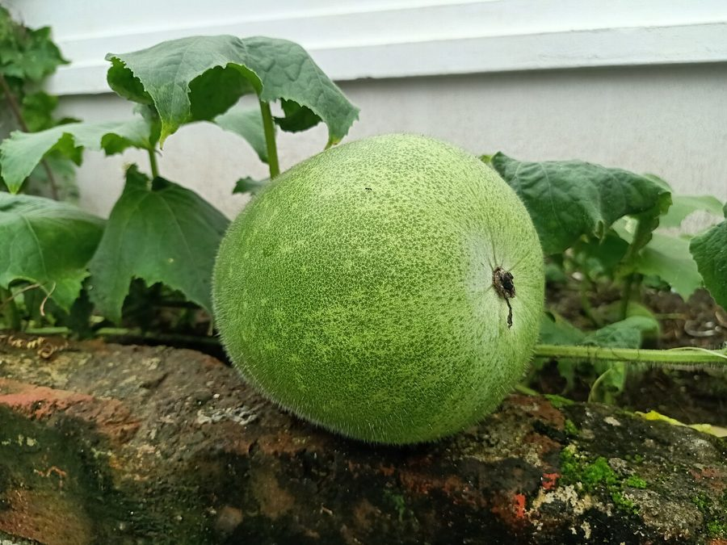

पेठाAsh Gourd
Benincasa hispida · Cucurbitaceae · FLR-0397

- Scientific name वैज्ञानिक नाम
- Benincasa hispida (Thunb.) Cogn.
- Family कुल
- Cucurbitaceae
- Hindi हिंदी
- पेठा
- Local names स्थानीय नाम
- petha, bhatua, chal kumra, ash gourd
- Status here यहाँ की स्थिति
- cultivated
- Movement आवागमन
- Resident, here all year
- Known from कहाँ दर्ज
- Others have published records from the wider Awadh–Purvanchal plain, none yet from Basti–Ayodhya अवध–पूर्वांचल से दूसरों के प्रकाशित अभिलेख, बस्ती–अयोध्या से अभी नहीं
- IUCN IUCN
- not evaluated
- Review समीक्षा
- not yet reviewed
When to look कब देखें
Present all year. साल भर मौजूद।
Uses and possibilities उपयोग और संभावनाएँ
“Traditional medicine” means a documented traditional use, not a claim that it works. Nothing on this page is medical advice.
Drawn from the documented uses in the profile below, where each is labelled traditional, current or a research lead. All uses →
पेठा / Ash Gourd
Benincasa hispida (Thunb.) Cogn. — Cucurbitaceae
पेठा — अवध और पूर्वांचल के ग्रामीण घरों की छतों और खेतों में फैलने वाली एक विशाल बेल है। इसके बड़े पीले फूल, खुरदरे रोएंदार पत्ते और सफेद मोम जैसी परत से ढके भारी गोल फल उत्तर भारत की प्रसिद्ध मिठाई पेठा और कद्दू की करी बनाने के लिए प्रसिद्ध हैं।
Quick Identification त्वरित पहचान
| Feature | Description |
|---|---|
| Habit | Robust, annual, monoecious climbing or trailing hispid vine with two- to three-cleft tendrils |
| Foliage | Large, reniform-rotundate leaves with five to seven shallow, sinuate-dentate lobes |
| Vestiture | Stems, petioles, and young fruits densely clothed with stiff, rough, bristly hispid hairs |
| Flowers | Large, solitary, yellow petals, axillary; male on long pedicels, female nearly sessile |
| Fruit | Massive, broadly cylindrical or globose berry (pepo) covered with thick, chalky white waxy bloom |
| Flesh & Seed | Thick, spongy, juicy white flesh embedding numerous flat, ovate, margined seeds |
Field tip: Look for vigorous vines with thick bristly stems sprawling across thatched village huts or earthen field ridges. The large, bright yellow flowers resemble pumpkin blossoms, but the developing cylindrical fruit is covered in stiff prickles that give way at maturity to a thick, unmistakable chalk-white waxy powder that rubs off on the hands.
हिंदी:
इसकी रोएंदार खुरदरी बेल छप्परों और मेड़ों पर बहुत तेजी से फैलती है।
बड़े पीले फूल खिलते हैं और फल के ऊपर सफेद भभूत या मोम जैसी धूल जमी होती है।
फल काटने पर अंदर से सफेद, रसीला गूदा और चपटे बीज निकलते हैं।
Morphology आकारिकी
Measurement not available in consulted sources. Ash gourd is a coarse, robust, climbing or prostrate annual herb reaching extensive lengths during the warm monsoon season. The stems are thick, angular, furrowed, soft-fleshy, and densely clothed with spreading, stiff, bristly hispid or villous hairs that give the vegetative parts a harsh, prickly touch. Tendrils are robust, lateral, borne in leaf axils, and two- to three-cleft, coiling tightly around trellises, thatch, or neighboring vegetation.
The leaves are alternate, petiolate, and expansive. Petioles are stout, cylindrical, furrowed, and bristly. The leaf blades are reniform-orbicular or broadly ovate in outline, cordate at the base with a deep sinus, five- to seven-lobed with rounded, triangular, or acute lobes; the margins are sinuate-dentate, and both surfaces are scabrid-hispid, with prominent palmate venation radiating from the petiole junction.
The species is monoecious, bearing separate staminate and pistillate flowers on the same individual plant. The flowers are solitary, axillary, and large. Staminate (male) flowers are borne on long, erect, hispid pedicels; the calyx tube is broadly campanulate with five lanceolate or subfoliaceous lobes; the corolla consists of five nearly free, spreading, obovate, bright golden-yellow petals with pronounced veining. The stamens are three, inserted near the base of the calyx tube, with short, thick, free filaments and contorted, bilocular anthers.
Pistillate (female) flowers are borne on short, stout, densely hispid pedicels. The calyx and corolla resemble those of male flowers. The ovary is inferior, unilocular with three parietal placentas, ovoid or cylindrical, densely clothed with long, soft, silky or hispid hairs. The style is short and thick, terminating in three large, fleshy, undulate or curved stigmas. The mature fruit is an enormous, broadly cylindrical, ellipsoid, or subglobose pepo with a smooth or faintly ribbed rind. When young, the fruit is green and covered with stiff hispid prickles; as it ripens, the hairs are shed and the exterior becomes coated with a dense, chalky white, glaucous waxy bloom. The pericarp is thick, firm, and leathery; the internal mesocarp consists of solid, succulent, spongy white flesh surrounding numerous compressed, oblong-ovate, smooth, yellowish-white seeds with distinct margins.
हिंदी: इसकी खुरदरी रोएंदार बेल बहुत तेजी से फैलती है। बड़े पीले फूल खिलते हैं और फल के ऊपर सफेद मोम जैसी भभूत जमी होती है। अंदर सफेद गूदा होता है।
Behaviour & Ecology व्यवहार एवं पारिस्थितिकी
Benincasa hispida is adapted to warm, humid tropical and subtropical climates, thriving under high temperatures and abundant sunlight during the northern Indian monsoon. The plant displays rapid vegetative growth, utilizing its branched tendrils to climb vertically over village hut roofs, wooden fences, and tree crowns, thereby elevating its flowers and fruits above ground-level moisture and herbivores.
The large, yellow, open blossoms are diurnal, expanding in the early morning hours and remaining receptive for pollination throughout the morning. The flowers secrete abundant nectar from the base of the floral tube, attracting large carpenter bees, honeybees and other bees. Monoecious flowering requires insect vectors to transfer pollen from male to female blossoms.
A notable ecological adaptation of ash gourd is the heavy secretion of triterpenoid epicuticular wax over the ripening fruit rind. This dense, hydrophobic, chalk-white coating prevents fungal spore germination, deters egg-laying by fruit-boring insects, and drastically minimizes transpirational moisture loss, enabling harvested fruits to remain fresh and succulent for many months without refrigeration in dry village storehouses.
हिंदी: बड़े पीले फूल सुबह खिलते हैं और मधुमक्खियों को मकरंद देते हैं। फल पर जमी मोम की परत उसे महीनों तक सड़ने से बचाती है।
Cultivation Calendar खेती का कैलेंडर
Duthie & Fuller (1883, Part II, p. 43) record under Benincasa cerifera that cultivation is restricted as a rule to little highly manured patches in the vicinity of village sites, commonly grown by Kachhis and Malis (or Muraos). They are sown either in the hot weather or at the commencement of the rains, continuing to fruit until the close of the rainy season. They occasionally form the sole crop on a field, but are more generally associated with other crops, often sown in lines between young sugarcane or maize.
हिंदी: डथी एवं फुलर (1883, भाग 2, पृ. 43) के अनुसार, गांव के पास खूब खाद दी गई क्यारियों में यह गरमी या बरसात शुरू होने पर बोया जाता है और बरसात के अंत तक फलता रहता है; अक्सर इसे मक्का या गन्ने की पंक्तियों के बीच बोया जाता है।
Life Cycle / Phenology जीवन चक्र एवं ऋतुचक्र
Ash gourd seeds germinate within a few days under warm soil conditions. The two large, rounded cotyledons emerge above ground, followed rapidly by the development of the primary hispid stem. Within a few weeks, the vine begins to branch and produce tendrils, initiating rapid climbing and ground trailing.
Flowering begins mid-season after sowing, with male flowers appearing several days before the first female flowers. Peak flowering occurs from July to September during the height of the monsoon. Following successful insect pollination, the ovary swells rapidly, developing a dense covering of bristly hairs that protects the young fruit from insect piercing.
Fruit growth continues over a couple of months. During maturation in autumn, the bristly hairs fall away and the distinctive white waxy powder is secreted over the green rind. By late autumn or early winter (October to December), the vine naturally senesces, leaving the hard-rinded, waxy fruits fully cured and ready for harvest.
हिंदी: बीज कुछ ही दिनों में उगते हैं। बरसात में बेल फैलती है और फूल खिलते हैं। कुछ महीनों में फल सफेद भभूत से ढककर पक जाते हैं।
Associated Species / Interactions सहजीवी प्रजातियाँ एवं पारिस्थितिक संबंध
Ash gourd fields and roof arbors serve as significant floral resource hubs in village agroecosystems. The expansive yellow flowers provide high-volume nectar rewards that sustain honeybees and wild solitary pollinators during mid-monsoon. The dense leaf canopy provides shaded nesting and hunting perches for garden lizards and praying mantises.
In rural home gardens, ash gourd is often cultivated alongside other cucurbit vines such as bottle gourd and pumpkin. Its broad, hairy leaves help create a sheltered, humid microclimate that moderates soil temperatures.
हिंदी: इसके फूलों पर भंवरे और मधुमक्खियां परागण करते हैं। गांवों में इसे लौकी और कद्दू के साथ छप्परों पर चढ़ाया जाता है।
Pests and Diseases कीट और रोग
A major insect pest of ash gourd across northern India is pumpkin beetles. The bright adult beetles feed on cotyledons, young leaves, and floral petals, while subterranean grubs feed on roots. Fruit flies attack developing tender fruits, tunneling through internal pulp and causing premature rot. Caterpillars of leaf-folding moths fold and skeletonize foliage.
Fungal diseases include downy mildew, which produces angular chlorotic patches delimited by leaf veins during warm, humid monsoon spells. Powdery mildew coats older leaves in white talc-like patches in late autumn. Blossom and fruit rots cause decay during persistent rain. Management relies on hand-picking beetles in the morning, bagging young developing fruits, clearing old crop residues, and maintaining good air circulation on elevated trellises.
हिंदी: लाल कद्दू भृंग (रेड पम्पकिन बीटल) और फल मक्खी इसके मुख्य शत्रु हैं। राख छिड़कने और फल ढकने से बचाव होता है।
Agricultural / Human Relevance कृषि एवं मानव प्रासंगिकता
Ash gourd is cultivated for its edible fruit, which is used as a vegetable and forms an ingredient in curries. The firm fruit is widely used by confectioners for the manufacture of the sweetmeat petha, prepared by boiling pieces in syrup. Duthie & Fuller (1883, Part II, p. 43) record that the fruit is used as a vegetable, forms an ingredient in curries, and is largely used by confectioners for sweetmeats. Chopra et al. (1956, p. 35) record the fruit as laxative, diuretic, and tonic, and the seeds as anthelmintic. This is a record of published traditional use, not medical advice. The protective waxy bloom allows harvested fruits to keep for months.
हिंदी: डथी एवं फुलर (1883) के अनुसार पेठे का फल तरकारी, कढ़ी और मिठाई बनाने के काम आता है। फल पर मोम की परत होने से यह लंबे समय तक सुरक्षित रहता है।
Expected Locally स्थानीय रूप से अपेक्षित
Not a field record. Written from published accounts for eastern Uttar Pradesh. No confirmed local sighting yet — if you have seen it, that is what the atlas needs.
अभी तक स्थानीय पुष्टि नहीं। यह विवरण प्रकाशित स्रोतों से है, किसी अवलोकन से नहीं।
Look on homestead garden fences, thatched rooftops, and alluvial fields across eastern Uttar Pradesh. It should be looked for during the monsoon and post-monsoon months sprawling over rural arbors and field edges.
GBIF holds published records from the wider Awadh–Purvanchal plain, none yet from Basti–Ayodhya.
A first record would be a photograph of the flowering or fruiting plant with place and date, sent through the About page.
Distribution वितरण
Benincasa hispida is cultivated throughout tropical and subtropical Asia, the Pacific, and the Caribbean. The species is indigenous to South and Southeast Asia, with wild or semi-wild populations reported from northern Australia, New Guinea, and tropical East Asia.
हिंदी: यह मूल रूप से दक्षिण और दक्षिण-पूर्व एशिया का पौधा है, जो उत्तर प्रदेश और पूरे भारत में खूब उगाया जाता है।
Research Questions शोध प्रश्न
- What are the primary native bee and wasp species that ensure commercial fruit set in ash gourd crops in eastern Uttar Pradesh? / पूर्वी उत्तर प्रदेश में पेठे की फसल में परागण और फल बनने के लिए कौन सी देशी मधुमक्खियां सबसे महत्वपूर्ण हैं?
- How does the chemical thickness and composition of the epicuticular wax layer correlate with storage life and weight loss across traditional ash gourd landraces? / पेठे के फल पर मोम की सफेद परत का उसकी भंडारण क्षमता और नमी रोकने से क्या संबंध है?
- What are the most effective cultural techniques for mitigating fruit fly damage in summer-sown crops? / फल मक्खी के नुकसान से पेठे के फलों को बचाने के लिए कौन से तरीके सबसे प्रभावी हैं?
- How do traditional arbor trellising methods compare with ground trailing in terms of fruit shape uniformity, yield, and fungal disease incidence?
- What are the biochemical changes in fruit pectin and sugars during the extended rural room-temperature storage period?
हिंदी: फल मक्खी से बचाव और फल के मोमी आवरण के गुणों पर और वैज्ञानिक शोध की जरूरत है।
Similar Species मिलती-जुलती प्रजातियाँ
Ash gourd (Benincasa hispida) is superficially similar to other large-fruited cultivated cucurbits during vegetative growth. Bottle gourd (Lagenaria siceraria, FLR-0096) produces large white flowers that open in the late afternoon and night, and its fruits are smooth, green, bottle-shaped or cylindrical, lacking any chalky white waxy powder. Pumpkin (Cucurbita moschata, FLR-0196) has large yellow flowers and sprawling hispid vines, but its leaves typically bear whitish mottled patches in the vein angles, its fruit stalks are deeply five-ribbed and flared at the fruit junction, and its fruits have thick orange or yellow flesh without an external chalk-white wax.
| Feature / Trait | Ash Gourd (Benincasa hispida) | Bottle Gourd (Lagenaria siceraria, FLR-0096) | Pumpkin (Cucurbita moschata, FLR-0196) |
|---|---|---|---|
| Flower Colour | Bright golden-yellow (diurnal) | Pure white (nocturnal/crepuscular) | Large golden-yellow (diurnal) |
| Fruit Surface | Thick, chalky white waxy bloom | Smooth green rind; non-waxy | Smooth or ribbed, mottled or dull |
| Flesh Colour | Solid, spongy, translucent white | Pale greenish-white, tender | Deep orange or yellow, rich |
| Stem Vestiture | Harshly hispid with stiff bristly hairs | Softly pubescent to glandular-hairy | Hispid to prickly angular stems |
| Tendril Type | Two- to three-cleft | Two-cleft | Two- to four-cleft |
Field rule: Ash gourd (Benincasa hispida) is distinguished by its large yellow diurnal flowers, bristly stems, and massive fruits covered in chalk-white waxy bloom, whereas bottle gourd has white nocturnal flowers and pumpkin has orange flesh.
हिंदी: लौकी के फूल सफेद होते हैं और कद्दू का गूदा पीला-नारंगी होता है, जबकि पेठे का फल सफेद मोम से ढका होता है।
Taxonomy & Classification वर्गीकरण एवं नामकरण
Benincasa hispida was transferred to the genus Benincasa by Alfred Cogniaux in 1881 in A. & C. De Candolle's Monographiae Phanerogamarum. It was originally described as Cucurbita hispida by Carl Peter Thunberg in 1784 in Flora Japonica. In nineteenth-century Indian botanical works, such as J. D. Hooker's Flora of British India and J. F. Duthie's Flora of the Upper Gangetic Plain, the species was commonly treated under the synonym Benincasa cerifera Savi. The genus Benincasa belongs to the tribe Benincaseae within the gourd family (Cucurbitaceae).
Original description. Benincasa hispida was transferred by Alfred Cogniaux in 1881 in Monographiae Phanerogamarum (vol. 3, p. 513), based on Cucurbita hispida Thunb. (1784).
Subspecies. No formally accepted botanical subspecies exist, though cultivars vary in fruit shape from cylindrical to globular.
Family and order placement. The genus Benincasa belongs to the tribe Benincaseae of the gourd family (Cucurbitaceae), order Cucurbitales.
IUCN status rationale. Benincasa hispida is an ancient cultivated domesticate widely planted throughout tropical and subtropical Asia and is Not Evaluated (NE) on the IUCN Red List.
हिंदी: अल्फ्रेड कॉग्नियो ने 1881 में इसका वर्गीकरण किया था। यह कुकुरबिटेसी (कद्दू कुल) का सदस्य है।
Photo Gallery फोटो गैलरी
No photos yet. Images documenting this species from eastern Uttar Pradesh will be added following verification.
References संदर्भ
- Cogniaux, A. (1881). Cucurbitaceae. In A. & C. De Candolle (eds.), Monographiae Phanerogamarum, vol. 3, p. 513. G. Masson, Paris.
- Duthie, J. F. & Fuller, J. B. (1883). Field and Garden Crops of the North-Western Provinces and Oudh. Part 2. Roorkee: Thomason Civil Engineering College Press, p. 43 (as Benincasa cerifera).
- Chopra, R. N., Nayar, S. L. & Chopra, I. C. (1956). Glossary of Indian Medicinal Plants. New Delhi: Council of Scientific & Industrial Research, p. 35.
- Clarke, C. B. (1879). Cucurbitaceae. In J. D. Hooker (ed.), The Flora of British India, vol. 2, p. 616. L. Reeve & Co., London.
- Duthie, J. F. (1903). Flora of the Upper Gangetic Plain and of the Adjacent Siwalik and Sub-Himalayan Tracts, vol. 1, p. 368. Office of the Superintendent of Government Printing, Calcutta.
- GBIF Occurrence Data — Benincasa hispida, India (2025).
Source file: species/flora/crops/ash_gourd.md